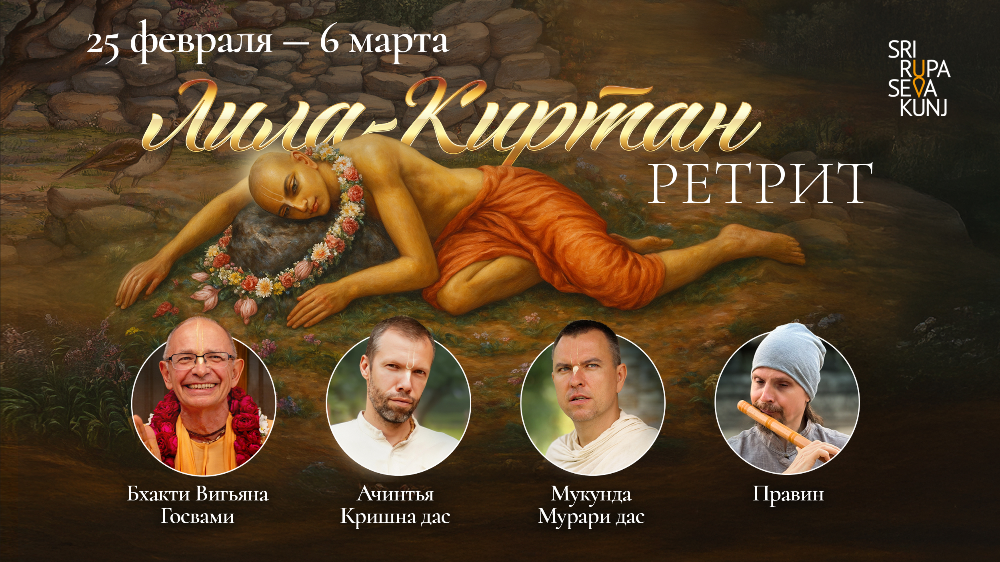

Уникальный ретрит, на котором Шрила Бхакти Вигьяна Госвами вместе с музыкантами будет погружать нас в Кришна-лилу.


ДАТЫ РЕТРИТА: 25 февраля – 6 марта 2026 года
Те, кто был во Врадже на ретритах Шрилы Бхакти Вигьяны Госвами, наверняка помнят удивительные программы, во время которых Махарадж читал главы из своей книги, а музыканты и певцы создавали атмосферу, помогающую погружению в лилы Господа и Его преданных. Вайшнавы говорили, что это был незабываемый опыт. Поэтому мы решили сделать целый ретрит, посвященный сплетению музыки и рассказов о Кришне!
Мы попросили Шрилу Бхакти Вигьяну Госвами подготовить отрывки из нескольких своих еще неизданных книг, пригласили лучших музыкантов и позаботились о хорошем звуке (что не так просто сделать в Индии). Теперь мы уверены, что все приехавшие на этот Лила-киртан-ретрит, получат глубокий духовный опыт.
Вечером мы будем погружаться в лила-киртаны, а днем – выезжать в места, о которых будет рассказывать Махарадж.
Вот, кто будет помогать Шриле Бхакти Вигьяне Госвами:
Правин – музыкант, участник группы «ОдноНо», знаток восточной духовной музыки. Будет играть на разных видах индийских флейт, на армянском дудуке и других духовых музыкальных инструментах.
Ачинтья Кришна дас – музыкант. С помощью гитары, клавиш и компьютера, создаст завораживающие музыкальные ландшафты.
Нама Санкиртан дас – профессиональный звукорежиссер, музыкант. Главный звукорежиссер фестиваля Radhadesh Mellows.
Если вы хотите принять участие в этом ретрите – поскорее подавайте заявку, количество мест в "Шри Рупа Сева Кундже" ограничено!
Подать заявкуСтоимость на одного участника:
🔸 Проживание на 10 дней в ашраме Шри Рупа Сева Кундж: 20000 рублей (220$ или 200€) – проживание в 2х местном номере, или 17500 рублей (150$ или 170€) – проживание в 4х местном номере.
🔸 Питание на 10 дней: 7500 рублей (80$ или 75€) - Завтрак и обед от проверенных поваров, которые готовят хороший прасад ориентированный на западных паломников.
🔸 Организационный взнос на этот ретрит: 25000 рублей (260$ или 240€)
Для нас очень важно быть максимально прозрачными в отношении финансов. Поэтому мы подробно рассказываем вам на что пойдет организационный взнос на этом ретрите:
– Оплата перелета, проживания, питания и гонорары музыкантам.
– Аренда хорошего звукового оборудования.
– Украшение мест проведения программ, гирлянды и так далее.
– Проживание, питание, транспорт и небольшие пожертвования для вайшнавов, занятых в организации ретрита.
– Пожертвования, которые мы традиционно оставляем на развитие мест, которые мы будем посещать.
– Пожертвования для старших преданных, которых мы будем приглашать.
– Качественная видео и аудио запись. Хочется, чтобы уникальная катха была сохранена для всех вайшнавов.
– Непредвиденные расходы (к сожалению, они всегда возникают).
Итоговая стоимость участия при двухместном проживании: 52 500 рублей (550$ или 500€)
По всем вопросам можете связываться с Олегом: +79617667833, он ответит на любые вопросы.
Если вы хотите принять участие в этом ретрите – поскорее подавайте заявку, количество мест в "Шри Рупа Сева Кундже" ограничено!
Подать заявку